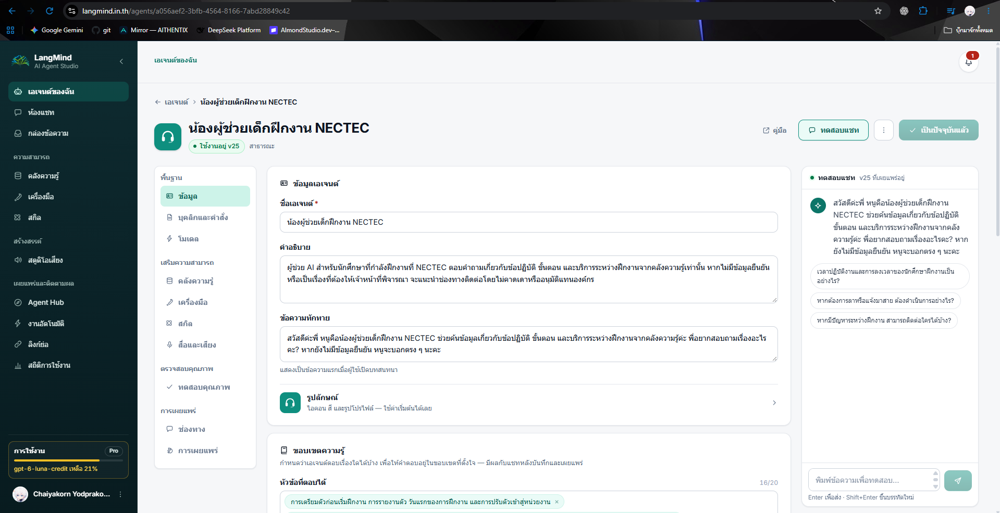

ตัวอย่างตำแหน่งรหัส · หน้า Agent NECTEC
เปิดหน้า Agent ที่คุณสร้าง
ดู URL ด้านบน
ตัวอย่างตำแหน่งรหัส · ใช้ ID ของคุณเอง
ไม่ต้องคัดลอก URL ทั้งหมด
LANGMIND_API_KEY=<API_KEY>LANGMIND_AGENT_ID=<AGENT_ID>ค่าที่แสดงเป็น placeholder · key อยู่ฝั่ง server
เตรียมผู้ช่วย → เชื่อมข้อความ → ต่อยอด
/api/chat คือ route ของแอปเรา
fetch('/api/chat', { method: 'POST', body: JSON.stringify({ message })})ส่งข้อความไปยัง route
ของแอปเรา
ตรวจ message และ sessionโหลดบทสนทนาของผู้ใช้เรียก LangMind ด้วยข้อความเก็บ conversation_id ฝั่ง serverส่ง answer กลับหน้าเว็บภาพอธิบายหน้าที่ ไม่ใช่โค้ดที่รันได้
POST /api/chat/message/blockingHost: langmind.in.thendpoint ของ LangMind
รอคำตอบเต็มก่อน
Authorization: Bearer <API_KEY>Content-Type: application/jsonkey ใช้ยืนยันสิทธิ์
เก็บไว้ฝั่ง server
{ "agent_id": "<AGENT_ID>", "query": "คำถามของผู้ใช้", "conversation_id": null}รอบแรกยังไม่มีรหัสบทสนทนา
fetch(LANGMIND_URL, { method: 'POST', headers: { Authorization: `Bearer ${API_KEY}` }, body: JSON.stringify(data)})ภาพย่อเพื่ออธิบาย · key อ่านจากค่าฝั่ง server
LangMind → server → หน้าเว็บ
server ตรวจผลก่อนส่งกลับ
{ "answer": "ข้อความคำตอบ", "conversation_id": "conv_demo_01"}ตัวอย่างผลลัพธ์แบบย่อ · ไม่ใช่ผลเรียกจริง
รหัสเดิมเชื่อมการสนทนา · สีแดงไม่ใช่ error